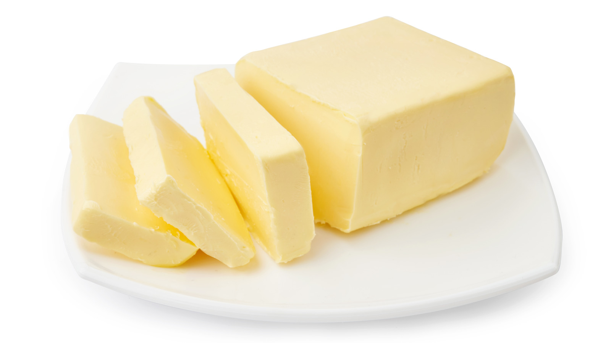

Ingredients
.jpeg) * One large onion, thinly sliced
* One large onion, thinly sliced-  * Two tablespoons of ghee (clarified butter) or oil
 * One cup of basmati rice
* One cup of basmati rice.jpg) * chicken
* chicken
A chicken plao is a mixture of chicken with chicken with its unique flavour and spices.
* One large onion, thinly sliced * One cup of basmati rice * chicken.jpeg) Till the water runs clear, rinse the basmati rice under cold water. Give the rice a 20 to 30 minute soak in water. Next, pour out and reserve.
Till the water runs clear, rinse the basmati rice under cold water. Give the rice a 20 to 30 minute soak in water. Next, pour out and reserve. Using a fork, gently fluff the pulao to separate the grains. If desired, remove the whole spices, such as the bay leaf, cinnamon stick, cloves, and cardamom pods. Pour in enough water to completely submerge the rice and meat. You'll usually need roughly 4 cups of water for every 2 cups of rice. Depending on the type of rice you're using and the consistency you want, adjust the water amount.
Using a fork, gently fluff the pulao to separate the grains. If desired, remove the whole spices, such as the bay leaf, cinnamon stick, cloves, and cardamom pods. Pour in enough water to completely submerge the rice and meat. You'll usually need roughly 4 cups of water for every 2 cups of rice. Depending on the type of rice you're using and the consistency you want, adjust the water amount.